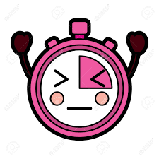

¿Qué es un temporizador?
Un temporizador es una herramienta que permite medir el tiempo transcurrido y programar una cuenta regresiva para una tarea en particular. Los temporizadores se usan para medir el tiempo de cocción de un plato en el horno, para programar una tarea específica en una computadora, para controlar la duración de una presentación, entre otras aplicaciones.
Tipos de temporizadores
Existen diferentes tipos de temporizadores, algunos de los cuales incluyen:
- Temporizadores mecánicos: utilizan engranajes y ruedas dentadas para medir el tiempo.
- Temporizadores electrónicos: utilizan circuitos eléctricos para medir el tiempo.
- Temporizadores digitales: son dispositivos electrónicos que utilizan microprocesadores para medir el tiempo.
Usos de los temporizadores
Los temporizadores se utilizan en una amplia variedad de situaciones, algunas de las cuales incluyen:
- En la cocina para medir el tiempo de cocción de alimentos.
- En la industria de la música para controlar la duración de una canción o un set.
- En la industria manufacturera para automatizar procesos.
- En la medicina para programar medicamentos y tratamientos.
- En el deporte para medir el tiempo de un evento o un ejercicio.
Recursos adicionales
Si quieres saber más sobre los temporizadores, puedes visitar los siguientes sitios web: